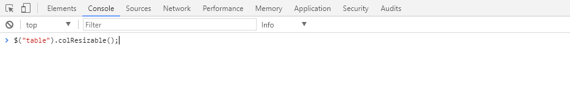
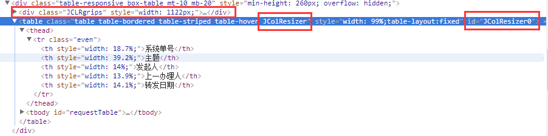

官网地址：http://www.bacubacu.com/colresizable/
这里值得注意的是，如果是动态加入的列，则需要先清理调用插件生成的class,id和div之后再重新调用才会有作用。
至于为何动态加载的列没有效果呢。首先，我想到了可能是方法加载在了动态生成列之前，所以我便手动在生成好的html上面手动调用如下图：

这也是一个小技巧，谷歌浏览器这里可以手动执行JS代码，回车之后，发现有效果。然而又一次动态加载之后，再次调用此方法就不再成功了。所以我就想是不是调用方法后加了什么东西，如果去掉之后再调用是不是就可以了。于是便去看了一下 $("table").colResizable();方法到底做了什么
下面我们来看看插件的 $("table").colResizable();方法到底做了什么？

如图，我们可以看到当调用$("table").colResizable()方法之后，html页面会添加上上图框出的部分。当我把多出来的部分删除之后再调用方法，发现可以，于是便得到了下面的解决办法：
function colResizable(){
$(".JCLRgrips").remove();
$(".JColResizer").removeClass("JColResizer");
$("table[id^='JColResizer']").removeAttr("id");
$("table").colResizable();
}
动态加载之后执行上面的方法，便可以解决这个问题了。
另外再提一点：上面只针对所有的table都可左右拉动，如果你需要指定某一个table的话 在table标签上面加一个name，然后调用时用$("[name='']").colResizable();也是可以的